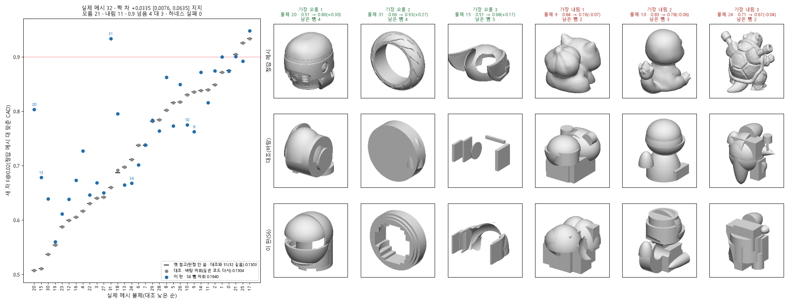

실험 m2_tr0324_h077_실제S6
목표 G1.2 view 모음 → 파츠별 CAD code(CadQuery · 그 전 「3 면도 → 파츠별 CAD」 · 지금 M2 는 위 · 앞 · 옆 고정 세 장만 받음 → 아무 각도 N 장으로 바꿀 것 · 11-20) · G1 첫 제품 — 피규어 · 메카 사진 여러 장 + 치수 → 숨은선 3 면도 + 파츠별 CAD · G0 임의의 이미지 → CAD 코드 · 빌린 가정 5: 정사영 · 시점앎 · 흰바탕 · 렌더화풍 · 정답3D · 갚는 계획: 정답 만들기 — 실제 메시에서 고른 어휘로 CAD code 정답 변환(m2 학습 · 비교는 그 뒤 카드) · 목표 시험지 값: 안 잼 (!)
S6 뺌 어휘(tr314 설정 — 씨앗 놓기 · 출발 16 · 유효지킴 · 버리기 없음)가 실제 메시 32 에서 같은 코드의 뺌 없는 바탕 어휘보다 나은가?
| 가설 | 주장 | 결과 | 근거 |
|---|---|---|---|
| m2-H77 | 실제 메시에서도 S6 뺌 어휘가 같은 코드의 바탕 어휘보다 새 자가 높다 | 지지 | 실제 메시 32 · 새 자 평균 S6 0.7640 · 대조(같은 코드 바탕 다시) 0.7304 · 옛 참고 0.7303 · 짝 차 +0.0335 구간 [0.0076, 0.0635] · 오름 21 · 내림 11 · 같음 0 · 물체별 차 중앙값 0.0151 · 최소 0.5599 · 0.5074 · 0.9 넘음 4 · 3 · 하네스 실패 0 · CAD 안 끝남 0 · 조용한 실패 0 · 실행 · 유효 아님 0 · 남은 뺌 몸 평균 2.84 · 판정 밖(결과 뒤): 20 · 31 이 짝 차 합의 53 %(31 0.66 → 0.93 · 20 0.51 → 0.80) · 둘 빼면 +0.017(0.0168) 구간 [−0.003, 0.035](−0.0025, 0.0354) · 오름 19 · 내림 11 · 부호 검정 p 0.11 · Wilcoxon p 0.077 · 중앙값 부트스트랩 [−0.001, 0.033] · F@0.01 평균 S6 0.5293 · 대조 0.5043 · 끝 켜진 몸 S6 더함 6.09 + 뺌 2.84 = 8.94 · 대조 7.56 · S6 칸 8 ~ 11 더함 0/32(더한 몸 ≤ 8) · 내림 11 중 대조 더한 몸 > 8 은 6 · 9 · 11 · 24 넷 · 대조 > 8 인 10 물체 중 오름 6 · 물체 10 더한 몸 7 대 7 · 더한 몸 상자 몫 0.395 · 0.397 · 9 · 24 상자 4/8 대 2/12 · 2/11 · 10 은 1/7 대 2/7 · 대조 대 옛 31/32 같음(18 만 +0.005 · 0.0046) · R7 후보 CAD 예외 · 무효 S6 17 회 12 물체 · 대조 2 회 2 물체 · R7 바뀜 평균 0.59 · 1.28 · 기록 합 GPU 70.9 · 35.4 분(2.0 배) · CPU 88.2 · 76.9 분 · 벽시계 GPU 단계 96.8 · 59.0 분 · 끝 단계 32.6 · 27.8 분 · 전체 2 시간 10 분(견적 2.5 ~ 3.4 시간) · 판 폴더 0.04 · 0.03 GB · 검토가 셈(결과 뒤 · 눈 분류): 구멍 · 속 빈 아홉(20 · 31 · 15 · 4 · 16 · 8 · 1 · 17 · 27) 모두 오름 · 둥근 생물 다섯(9 · 10 · 24 · 11 · 25) 모두 내림 · 가는 팔다리 생물(18 · 30 · 23 · 19 · 12) 오름 · 물 안 새는 22 물체 부피 ÷ 볼록 껍질 대 짝 차 ρ −0.50(p 0.019) · 남은 뺌 수 대 짝 차 ρ +0.28(p 0.12) · 더한 몸 수 차 대 짝 차 ρ +0.33(p 0.07) · 가장 내린 셋째 24(−0.044 · −0.0435)는 5(−0.043 · −0.0425)와 거의 같음 · 남에게서 옮긴 값: 씨 묶음 흔들림 물체별 SD 0.039 · 평균 ±0.007 · 바퀴 테 31 뺌 상자 셋 |
결정 표(돌리기 전에 정함)
- 만약 지지
다음 실제 메시 정답 변환 어휘를 S6 로 바꾸는 카드(실제 300 전체 · 남은 뺌 몸 그림 먼저) - 만약 기각
다음 실제 메시에는 뺌 어휘가 안 맞음 — 바탕 어휘 그대로 · 더한 몸 쪽(진단_보임 짐작)을 다음 물음으로 사용자와 고름 - 만약 약함
다음 섞임 — 숫자 · 오른 물체 · 내린 물체 그림 그대로 적고 사용자와 고름
분석
한 줄로
물음: 뺌 몸이 있는 어휘(S6)는 합성 정답에서만 시험했다. 실제 메시 32 개에서도 같은 코드의 뺌 없는 바탕 어휘보다 나은가?
답: 낫다. 평균 새 자가 0.7640 으로 대조 0.7304 보다 높다(짝 차 +0.034 · 구간 [0.008, 0.064]). 구간 아래끝이 0 위라 판정은 지지다. 결과 전 예측은 보류였다. 결과 뒤에 세어 보니 오름의 절반은 두 물체(20 · 31)에서 왔다.
왜 이 실험을 했나
우리 목표는 메시를 부품 CAD 코드로 바꾸는 것이다. 이 판은 그 정답을 만드는 변환 쪽이다. tr314 ~ 323 은 S6 어휘로 직접 만든 합성 정답 32 개(관문 ④)에서만 S6 를 쟀다. 그 정답은 S6 낱말로 지었으니 S6 에 유리할 수 있다. 사용자가 「여기까지 하네스로 저장하고 실제 데이터로 넘어가자」고 정해서, 실제 메시에 S6 를 처음 돌렸다.
낱말 몇 개를 먼저 풀어 둔다.
- 뺌 몸 은 더한 몸에서 깎아 내는 몸이다(구멍 · 홈).
- 씨앗 은 입력에서 파인 점을 덩이로 나눠 뺌 몸을 처음 놓는 자리다. 실제 32 물체 모두 씨앗이 넷이다.
- 몸 칸 은 한 물체에 쓸 수 있는 몸 자리 12 개다. S6 는 그중 넷(칸 8 ~ 11)을 뺌 씨앗에 준다.
- 끝 단계 는 고른 출발을 다듬는 단계다. 몸을 끄거나 뒤집고(R7), 점수를 거의 안 바꾸는 몸은 지운다.
바꾼 것 하나
어휘 하나다. 이 판은 S6(뺌 몸 · 씨앗 놓기)이고, 대조는 같은 코드를 뺌 없이 다시 돌린 판이다. 출발 16 개(씨 101 ~ 116) · 걸음 수 · R7 · 가지치기는 같다. 두 판은 GPU 둘에서 나란히 돌았고, 끝 단계는 잠금으로 차례로 돌았다.
결과

왼쪽은 대조 점수가 낮은 물체부터 늘어놓은 것이다. 파랑(S6)이 회색(대조) 위에 있으면 오른 물체다. 오른쪽은 가장 오른 셋과 가장 내린 셋을 정답 · 대조 · S6 순서로 같은 시점에서 그렸다.
| S6(이 실험) | 바탕(대조) | 옛 바탕(참고) | |
|---|---|---|---|
| 새 자 평균 | 0.7640 | 0.7304 | 0.7303 |
| 가장 낮은 물체 | 0.5599 | 0.5074 | — |
| 0.9 넘은 물체 | 4/32 | 3/32 | — |
| 오름 · 내림 | 21 · 11 | — | — |
| 하네스 실패 · CAD 안 끝남 · 조용한 실패 | 0 · 0 · 0 | 0 · 0 · 0 | — |
| R7 후보가 낸 CAD 예외 · 무효(판정 밖) | 17 회 · 12 물체 | 2 회 · 2 물체 | — |
| 끝에 켜진 몸(더한 몸 + 뺌 몸 · 물체 평균) | 6.09 + 2.84 = 8.94 | 7.56 + 0 | — |
새 자는 정답 메시와 맞춘 CAD 의 표면 점이 서로 0.02 안에 드는 정도를 F 점수(0 ~ 1)로 잰 값이다. 거리 단위는 정답 상자의 가장 긴 변을 1 로 둔 것이다. 구간은 물체를 짝지어 다시 뽑은(부트스트랩 2,000 번) 95 % 구간이다. R7 후보의 예외 · 무효는 끝 점수에서 버려진 후보라 판정 숫자에는 안 들어간다.
왜 이렇게 나왔나
확인한 것 (판정 숫자 밖은 모두 결과 뒤에 셌다)
- 물체별 차의 중앙값은 +0.015 로 평균 +0.034 보다 작다. 가장 큰 오름 둘은 바퀴 테 꼴 물체 31(0.66 → 0.93)과 헬멧 꼴 물체 20(0.51 → 0.80)이고, 둘이 짝 차 합의 53 % 다.
- 치우침에 덜 기대는 검사는 모두 약하다(결과 뒤). 부호 검정 21 대 11 은 p 0.11, Wilcoxon 은 p 0.077, 중앙값 부트스트랩 구간은 [−0.001, 0.033] 이다. 20 · 31 을 빼면 짝 차 +0.017 · 구간 [−0.003, 0.035] 다(가장 큰 둘을 골라 뺀 값이라 늘 낮게 나온다).
- 그림에서 물체 31 대조는 속이 꽉 찬 원판이고, S6 는 상자 뺌 셋으로 가운데를 계단 꼴로 파냈다. 물체 20 은 S6 가 둥근 껍데기 안쪽을 비웠다.
- S6 의 더한 몸은 언제나 8 개 이하다. 칸 8 ~ 11 에 더한 몸이 남은 물체가 0/32 다. 그러나 내린 11 물체 가운데 대조가 더한 몸을 8 개보다 많이 쓴 것은 넷(6 · 9 · 11 · 24)뿐이다. 거꾸로 대조가 8 개를 넘긴 10 물체 가운데 여섯은 S6 에서 올랐다. 그래서 칸 상한으로는 내림 대부분이 설명되지 않는다. 두 번째로 많이 내린 물체 10 은 더한 몸이 7 대 7 로 같다.
- 더한 몸 가운데 상자의 몫은 S6 0.395, 대조 0.397 로 같다. 물체 9 · 24 만 보면 S6 상자 4/8 대 대조 2/12 · 2/11 이고, 물체 10 은 1/7 대 2/7 로 반대다.
- 대조(같은 코드 다시)는 옛 바탕 판과 31/32 물체가 끝칸까지 똑같다. 물체 18 만 고른 출발이 달라 +0.005 다. 같은 씨로 다시 돌리면 거의 그대로 나온다.
- 시간은 같은 기준으로 견주면 기록 합 GPU 맞춤이 S6 70.9 분 대 바탕 35.4 분(2.0 배), CPU 가 88.2 분 대 76.9 분이다. 벽시계는 S6 GPU 단계 96.8 분 · 끝 단계 32.6 분, 바탕 59.0 분 · 27.8 분이다. 바탕 끝 단계는 S6 GPU 단계와 겹쳐 돌았다. 전체 2 시간 10 분으로, 카드 견적 2.5 ~ 3.4 시간보다 짧았다.
짐작 (아직 확인 안 함)
- 꼴에 따라 갈리는 것으로 보인다. 검토가 32 물체 정답을 차 순서로 그려 눈으로 나눴다. 구멍이 있거나 속이 빈 아홉(20 · 31 · 15 · 4 · 16 · 8 · 1 · 17 · 27)은 모두 올랐다. 둥근 생물 다섯(9 · 10 · 24 · 11 · 25)은 모두 내렸다. 팔다리가 가는 생물(18 · 30 · 23 · 19 · 12)은 올랐다. 물이 안 새는 22 물체에서 「부피 ÷ 볼록 껍질 부피」와 짝 차의 순위 상관은 −0.50(p 0.019 · 검토가 셈)이다. 셋 다 결과 뒤에 붙인 분류 · 셈이다.
- 둥근 생물에서 내리는 까닭은 모른다. 칸 상한은 넷만 설명한다(확인한 것). 사용자는 「디테일을 표현할 어휘가 없다」고 짐작했다(법칙 L36 · 다음 카드 tr325).
- 남은 뺌 몸 수와 짝 차의 순위 상관은 +0.28(p 0.12)이다. 약하다.
한계
- 한 번만 돌렸다. 실제 32 물체뿐이다(검증 300 의 앞 32).
- 출발 씨 묶음(101 ~ 116)을 바꾸면 물체별 점수가 SD 0.039 만큼 흔들린다(카드 기준선). 평균으로는 약 ±0.007 이다. 물체 부트스트랩 구간에 물체마다의 흔들림이 섞여 있어 판정이 뒤집힐 크기는 아니다. 같은 씨로 다시 돌리는 흔들림은 거의 없다(확인한 것).
- S6 는 「뺌 표시」와 「더한 몸 칸 넷을 씨앗에 내줌」을 한꺼번에 바꿨다. 이 판으로는 둘을 나눌 수 없다.
- 오름의 절반이 두 물체에서 왔고, 치우침에 덜 기대는 검사는 모두 약하다.
- 새 자는 표면만 본다. 물체 31 의 0.93 도 구멍을 계단 꼴로 낸 결과다. 부품 나눔이 정답에 맞는지는 재지 않았다.
- 가장 내린 셋째 물체 24(−0.044)는 물체 5(−0.043)와 거의 같다. 그림에 고른 셋은 우연에 가깝다.
배운 것과 다음
실제 메시에서도 S6 뺌 어휘가 바탕 어휘보다 평균 0.034 높다(지지). 다만 오름은 두 물체에 크게 기대고, 둥근 생물은 내렸다.
- 카드의 「지지면」 은 실제 300 전체에서 S6 로 정답 변환을 하는 카드다. 다음은 사용자와 고른다.
- 사용자 가설(L36 · 자유 곡면을 담을 어휘가 없다)을 GPU 없이 있는 결과로 먼저 잰다(tr325).
검토 (11-27 맥락 없는 서브 에이전트 · 보고 · 카드 · 잼 · 그림 · 그림324.py · 두 팔 폴더(끝 json · stl · 끝칸 · 칸 · 기록) · 상태 파일 · 배관2.py 만 봄)
- 숫자는 모두 다시 셈과 맞음.
- 가장 큼: 짐작 「뺌 칸이 더한 몸 칸을 차지한 탓」 은 끝칸으로 바로 잴 수 있었고, 재면 내림 11 중 넷만 맞음. 맞는 예(9 · 24)만 골라 적고 10(7 대 7)을 뺌. S6 몸 합 8.94 가 대조보다 많은 점이 빠짐.
- 「S6 쪽에 네모난 몸이 더 보인다」 는 인상 · 상자 몫은 차이 없고 10 은 반대.
- 꼴 짐작은 그림 여섯 장에만 기댐 · 32 물체를 다 그리면 근거가 더 있으나 「생물」 이 아니라 「둥근 생물」 · 굵은 결론에 짐작을 넣음.
- 한계: 같은 씨 다시 돌림 흔들림이 아니라 씨 묶음 흔들림(SD 0.039)이 빠짐 · 뺌 표시와 칸 내줌이 엮임.
- 시간 비교 기준이 다름(끝 단계 겹침) · 기록 합 GPU 70.9 대 35.4 분 · 카드 견적 대비 빠짐.
- 실패 표: R7 후보 CAD 예외 · 무효 17 대 2 · R7 받아들인 바뀜 0.59 대 1.28 빠짐.
- 「결과 뒤」 표시 고르지 않음 · 부호 검정 p 0.11 · Wilcoxon p 0.077 · 중앙값 구간 [−0.001, 0.033].
- 그림: 31 구멍은 상자 뺌 셋 계단 꼴 · 24 ≈ 5 · 폰 열 셋(규칙은 둘 이하) · 회색 점이 옛 × 밑에 가림. 「tr313 ~ 323」 → 「tr314 ~ 323」.
고친 줄 (검토 반영)
- 제 실수: 잴 수 있었던 「칸 차지 탓」 을 맞는 두 예만 골라 짐작으로 썼다. 내가 끝칸으로 다시 셈(칸 8 ~ 11 더한 몸 0/32 · 내림 중 대조 > 8 은 6 · 9 · 11 · 24 · 대조 > 8 인 10 중 오름 6 · 몸 합 8.94) → 확인한 것으로 옮기고 「내림 대부분은 설명 안 됨」 으로.
- 상자 몫은 내가 더한 몸만으로 다시 셈(0.395 대 0.397 · 검토 0.377 은 정의가 달라 안 씀) · 「네모난 몸」 문장 지움.
- 꼴 짐작은 검토가 센 분류 · 상관을 「결과 뒤 · 검토가 나눔」 으로 옮기고 「둥근 생물」 로 좁힘 · 굵은 결론에서 꼴 주장 뺌.
- 한계에 씨 묶음 흔들림 · 엮임 넣고 「S6 다시 안 돌림」 지움 · 표에 R7 후보 예외 · 무효 · 몸 합 · 시간은 기록 합 기준 함께(R7 바뀜 0.59 대 1.28 은 내가 다시 셈).
- 그림: 폰은 두 열(오름 | 내림) · 옛 참고는 가는 가로 막대로 바꿔 회색 점이 보이게 · 눈금 글자 키움 · 그림을 다시 보냄.